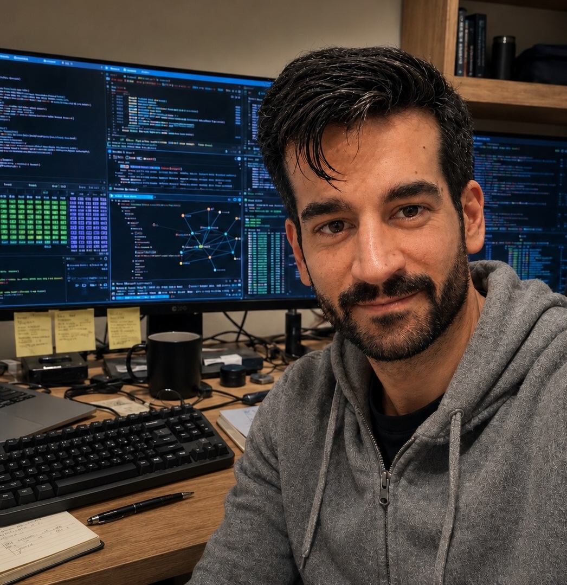

$ whoami

I am Associate Professor at International University of La Rioja (UNIR). I work on system security, with current interests in binary analysis, vulnerability analysis, and web security.
Previously I was Research Scientist at HP Labs, working on Edge Security. I have also been a member of the Data Analysis and CyberSecurity Research Team (DANZ) at Mondragon University, and Researcher and Project Manager at the Deusto Institute of Technology (DeustoTech) and Assistant Professor at the Faculty of Engineering of the University of Deusto.
Besides my passion about computer science and system security, I am a frustrated cartoonist and an amateur card magician. I also enjoy films, TV series, anime, and comics in general.
$ cat contact.txt
- firstname + '@' + thisdomainname
- @santos_grueiro
- cv
- full CV